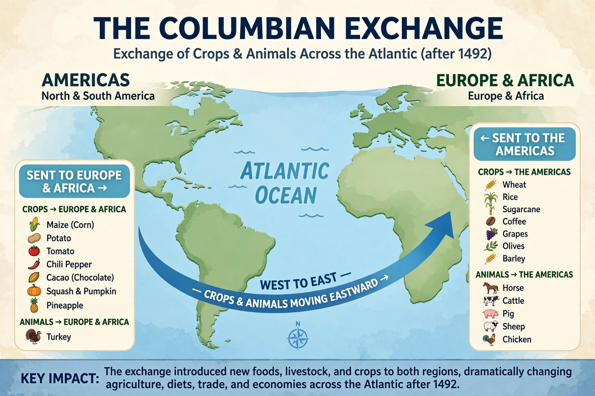

Columbian exchange

Period: 1492 onwards
Named by: Alfred W. Crosby (1972)
Between: The Americas and the Old World (Europe, Africa, Asia)
The Columbian exchange, named after Christopher Columbus, was the widespread transfer of plants, animals, precious metals, commodities, culture, human populations, technology, diseases and ideas between the New World (the Americas) in the Western Hemisphere, and the Old World (Afro-Eurasia) in the Eastern Hemisphere, in the late 15th and following centuries. The term was coined by historian Alfred W. Crosby in his 1972 book The Columbian Exchange.
Transfers of food
From the Americas came maize, potatoes, tomatoes, capsicum peppers, cacao, peanuts, cassava, sweet potatoes, pineapples, tobacco and turkeys; potatoes and maize in particular raised caloric yields in Europe and Asia and underpinned population growth. From the Old World came wheat, rice, sugarcane, coffee, citrus fruits, bananas and plantains, and livestock — horses, cattle, pigs, sheep, goats and chickens — which transformed American landscapes and Indigenous ways of life; the horse reshaped Plains cultures, and cattle and pigs ranched across new grasslands. Crops such as the tomato (central to Italian cooking), the chilli (central to Indian, Thai and Sichuan cooking) and the potato (central to northern European diets) became so embedded abroad that their American origin was almost forgotten.
Disease and demography
The most catastrophic transfer was disease. Old World pathogens including smallpox, measles, influenza and typhus, to which Native Americans had no immunity, caused epidemics that killed enormous proportions of the population of the Americas — estimates commonly range from 50% to 90% over the following century — facilitating European colonisation and the subsequent importation of enslaved Africans. Syphilis is widely (though not certainly) believed to have travelled in the opposite direction.
Significance
Historians regard the exchange as a turning point in world ecology and demography, homogenising global agriculture, integrating world trade through the spice trade and beyond, and enabling the population growth and urbanisation of the modern era.